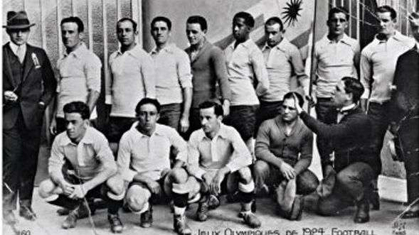
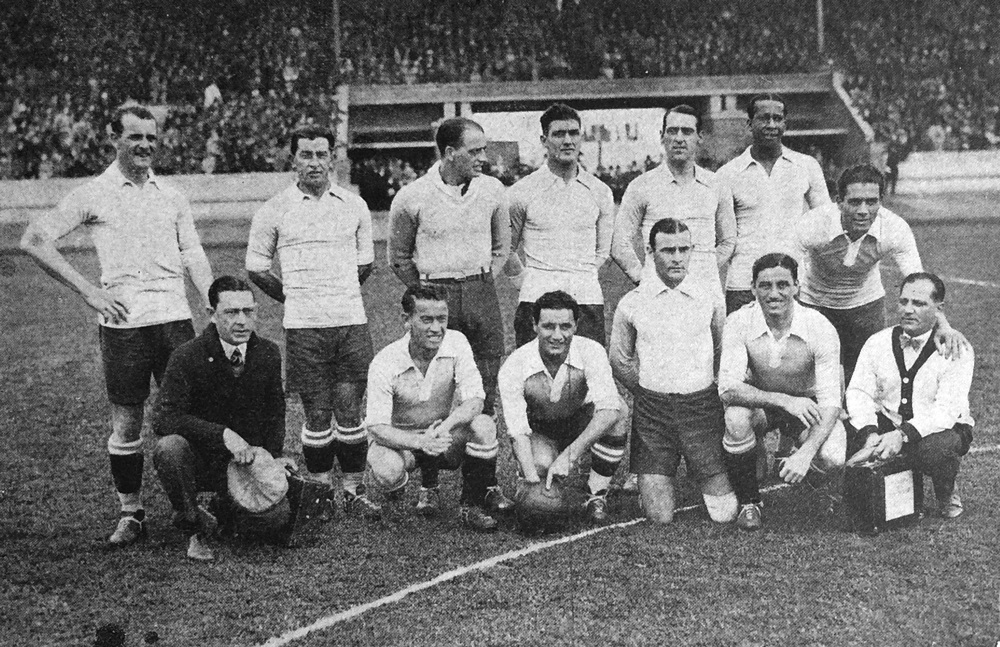

Juegos Olímpicos
Antes de que se juegue la 1er Copa del Mundo en 1930 (en la cual Uruguay fue el campeón), la máxima competición a nivel mundial que se disputaba eran los JJOO, y Uruguay no iba a ser la excepción, saliendo campeón en París 1924 y Ámsterdam 1928.
París 1924
La selección uruguaya comenzó el torneo ganándole a Yugoslavia 7 a 0 en la fase preliminar. Los goles de aquel partido, disputado en Colombes, los convirtieron José Vidal, Héctor Scarone, Pedro Petrone (2), Pedro Cea (2) y Ángel Romano. Por octavos de final, la Celeste superó 3-0 a Estados Unidos en el estadio Bergeyre de París con goles de Petrone (2) y Scarone. Esa victoria le posibilitó clasificar a cuartos de final en donde enfrentó a Francia el 1° de junio. Uruguay derrotó 5-1 a los locales con anotaciones de Scarone (2), Petrone (2) y Romano. En semifinales, Uruguay triunfó 2-1 sobre Holanda, luego de ir en desventaja. Los tantos fueron convertidos por Cea y Scarone. En la final disputada en el estadio Olímpico, Uruguay goleó 3-0 a Suiza logrando la medalla de oro. Petrone, Cea y Romano convirtieron los goles. Petrone llegó a siete conquistas y fue el goleador del certamen. Luego del encuentro, como festejo, los jugadores dieron una vuelta alrededor de la cancha saludando al público presente. De esa forma nació la vuelta olímpica.
Ámsterdam 1928
El torneo de fútbol correspondiente a los Juegos Olímpicos de 1928 se disputó entre el 27 de mayo y el 13 de junio en la ciudad de Ámsterdam. Participaron 17 selecciones y se le dio carácter de mundial de fútbol. La Celeste comenzó el torneo con una victoria ante Holanda por 2 a 0 por la primera ronda. Los goles fueron convertidos por Héctor Scarone y Santos Urdinarán. En la segunda ronda venció a Alemania 4 a 1, con tres anotaciones de Pedro Petrone y una de Héctor Castro. En Semifinales, la selección uruguaya venció a Italia 3 a 2 con goles de Pedro Cea, Antonio Campolo y Héctor Scarone, tras iniciar con el score favorable para el equipo azzurro. El 10 de junio se disputó la primera final frente a Argentina y culminó 1 a 1, con gol de Pedro Petrone. Mientras que el 13 de junio se llevó adelante el encuentro definitivo, en el que Uruguay logró vencer 2 a 1, con goles de Roberto Figueroa y Héctor Scarone.
